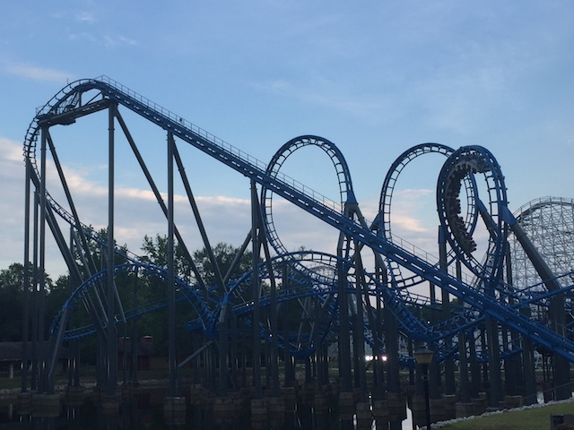
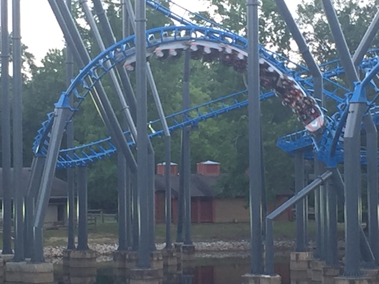
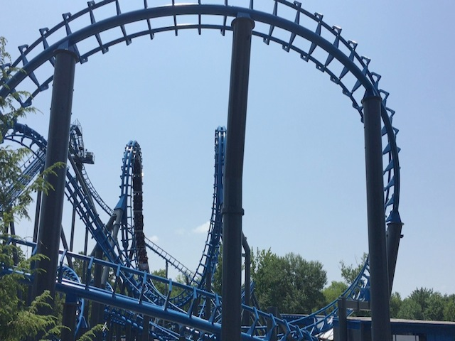
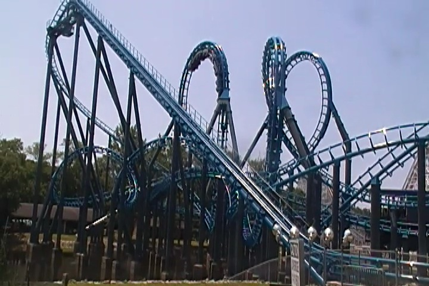
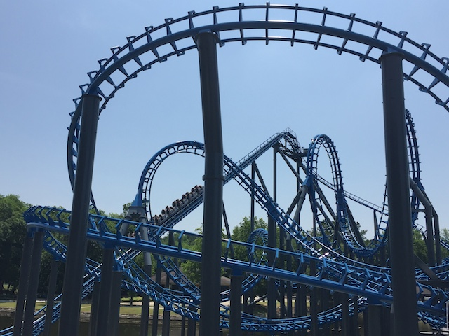
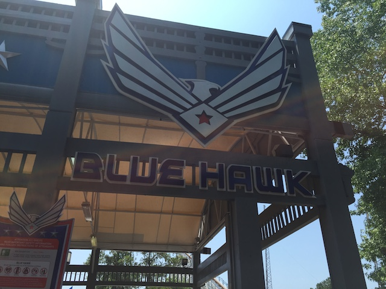

| |
Blue Hawk Review

We're here at Six Flags Over Georgia. Today's ride we'll be reviewing for you is Blue Hawk. Though I'm sure many of you will know this ride by its former name. Ninja. Now when you look at Blue Hawk, it looks like a very fun ride. It looks like it has a lot of fun twisty bits, and should be really good. However, if you pay attention to the roller coaster community, you'll know that Blue Hawk has a bad reputation. A VERY bad reputation. People really do not like this ride. They say that is incredibly rough, very painful, and that it's a terrible peice of sh*t. Many of these similarities are pointed out by the fact that it is a very similar ride to Gouderix, which has a similar reputation. However, unlike Gouderix, which IS a terrible peice of sh*t (Seriously, watch my POV to see how bad it is), I actually really like Blue Hawk. Yeah. It looks like Gouderix. It was made by the same company (Vekoma) that made Gouderix. It's the only other coaster on earth with one of those horrendous Butterfly elements. And it has similar reviews as Gouderix. And yet...I like this ride. For some strange odd reason, it actually works on this ride. I know I'm in the extreme minority on this, and you're going to see this high up on our Top 10 Most Underrated Coasters List. So yeah. I'm going to be defending the ride throughout this review. Let's go ahead and take a ride on Blue Hawk. So we get in, pull down the vest restraints, and we're off! We climb up the lifthill, and there's not much of a view. Just hope that all those bad reviews of the ride aren't true. And we reach the top, and head down the first drop. It's a curved first drop, but it works. And we gain some speed. Let's really hope that this doesn't try to kill us. And yeah. We're going through the freakiest part of the ride now. The Butterfly inversion. Now if you know Gouderix. You know that this is the part of the ride that you should really fear as that's by far, the most painful and brutal part of Gouderix. So you better brace yourself. And...it's not killing us. What the flying f*ck!? Well, first off, it's important to note the following. The ride, when it was turned into Blue Hawk, it got those vest restraints. Now as you know, the vest restraints really restrict the amount of headbanging you experience and do a tremendous job of keeping you still. And they definetly do their job. You can tell that there used to be headbanging here. However, the vest restraints...actually restrain you, and prevent your head from smacking around. Also, it's worth noting that you could tell that even prior to the vests, the headbanging you would've had here wouldn't have been as bad as Gouerix. Cause if you look at it, yeah. This butterfly inversion is pretty twisted and messed up. However, it's not quite as twisted as the Gouderix one. It's not quite as...coathangery here. A little more natural. But hey! We survived the Butterfly, and the vest restraints saved our heads. If we can make it through the butterfly, then the rest can't be that bad. BRING IT ON!!! We then head through a curved hill, as a sort of turnaround. Yeah, it's a little awkward. It might've had a smack to the head here in the past, but now, with the vests, just head up and around the curve. This should be fun. That roundabout curve leads us right into the sidewinder. And...yeah. You can tell that there used to be a nasty smack here. It doesn't hurt due to the vest restraints, but the ghost of headbanging still does live on. Oh well, we flip upsidedown, dive back to the ground, and you better watch out. There's some fun headchoppers here. We then head up a small hill, go around a turn, and wind through more support headchoppers before rolling right into a double corkscrew. This isn't bad. Not bad at all. It's a lot of fun, only made even better with all the freaky headchoppers and being right above the water. We then headed around a small sort of tight turn and through a tiny bunny hop, that's so buried underneath the ride, that you just see the mess of track above (Seriously awesome view of the butterfly from here). I just love that about the ride. We then head around a turn, and into the brake run. Aww, it's over already? I was having fun. Wait? Wasn't I supposed to hate this ride? Yeah. This ride is actually really freaking good. Yeah. You can tell that this ride was rough in a lot of parts. I don't think the people talking about headbanging were bullsh*tting or just being overdramatic. But with the new vest restraints, it really cuts back on the headbanging and allows all the positive parts of the ride to shine through. It's actually got some decent speed, all the inversions are very twisty, and a lot of fun. And of course, the sheer number of headchoppers really makes the ride that much more exciting. I know it has a bad reputation, but give this ride a chance. It won't bite. I promise. =)
7/10
Location: Six Flags Over Georgia
Opened at Dinosaur Beach in 1989
Moved to Six Flags Over Georgia in 1992
Built by: Vekoma
Last Ridden: June 27, 2016
Blue Hawk Photos





Home
|